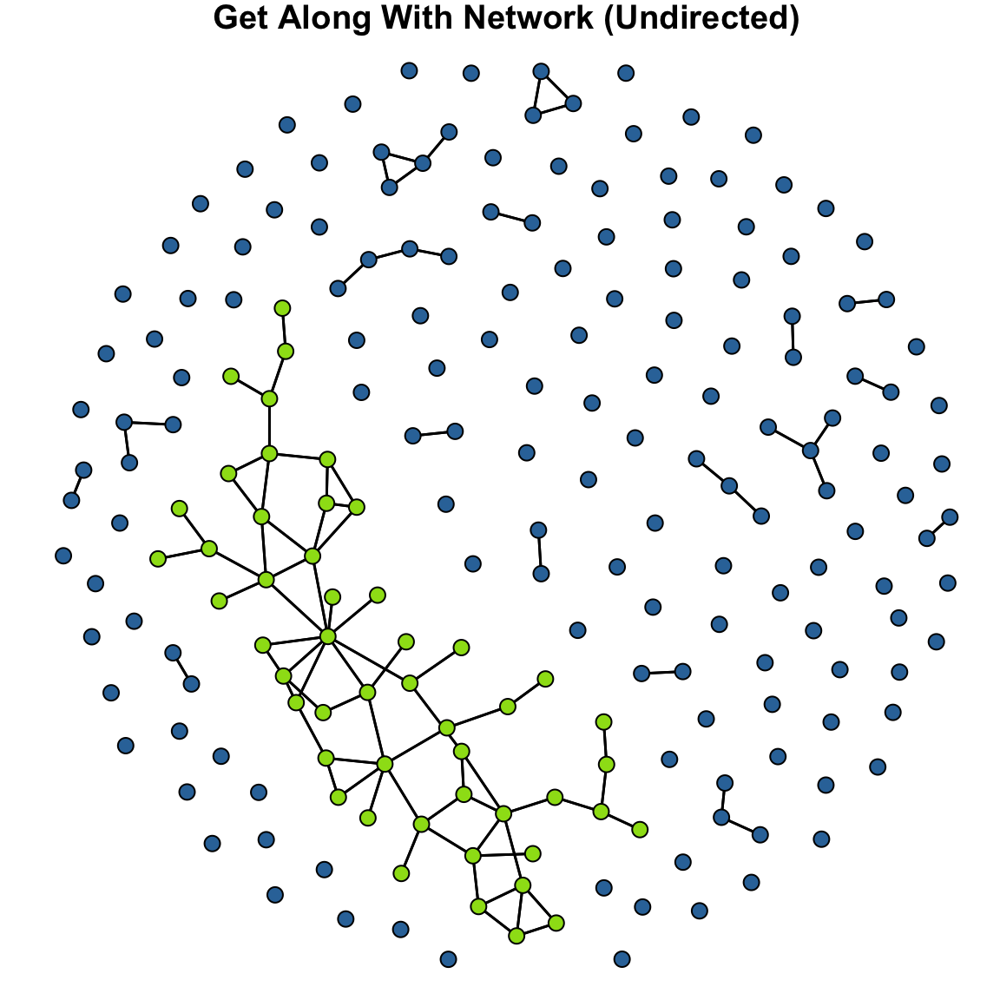
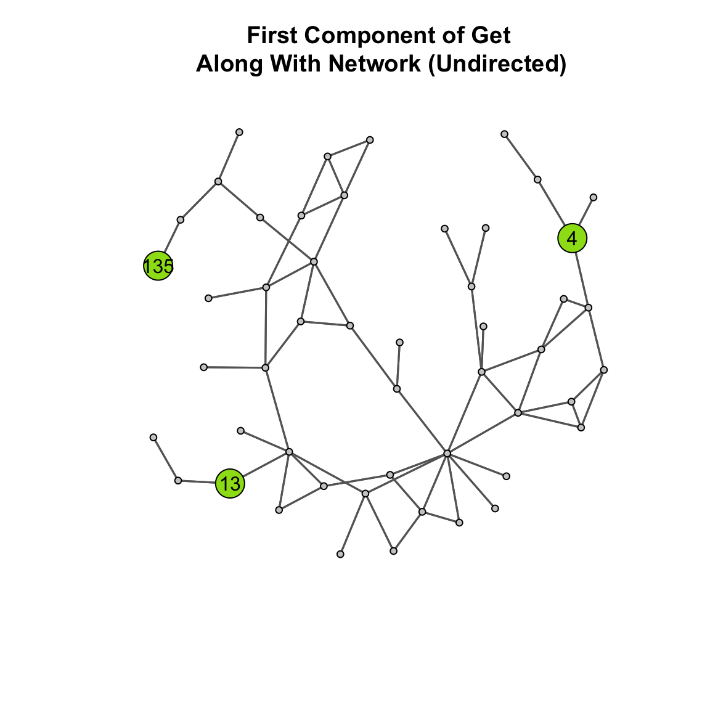
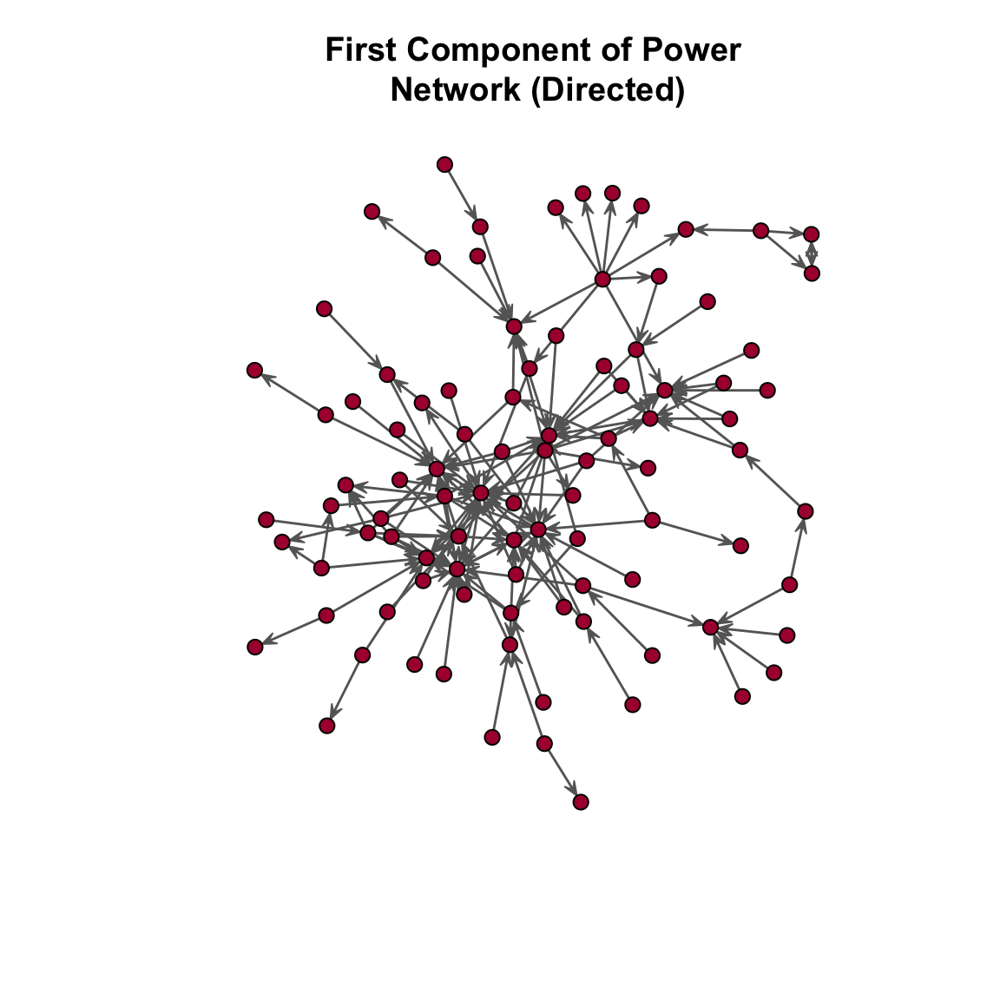

# now, take a look at the geodist() function
?geodistCloseness Centrality and Centralization
How do we know whether a node is important in a network? As was discussed at the beginning of the chapter on Degree Centrality, one of the most popular concepts in network analysis is centrality. In that chapter, we covered how centrality can be measured by the number of edges incident on a node. But, that is not the only way that a node can be central. The chapter on Closeness Centrality discussed an alternative conceptualization, closeness, where important nodes are those who are “close” to other nodes in the network.
In this tutorial, we will examine how to calculate closeness centrality and centralization scores in R using the closeness() and centralization() functions in the sna package.
Closeness Centrality (Undirected Binary Graphs)
How close is a node to other nodes?
In an undirected binary graph, closeness centrality measures how near a node is to the other nodes in the network. This is based on the inverse of the distance of each actor to every other actor.
Terminology:
The distance, \(d(n_i,n_j)\), is the length of the path between i and j. For example, suppose Sally is friends with Tom, Ulrica, and Violet; Violet is friends with Tom and Walter. What are the paths from Violet to Ulrica? Walter from Ulrica?
A geodesic is the shortest path between two nodes. What is the shortest path (i.e. geodesic) from Violet to Ulrica?
Closeness centrality is calculated as:
\[C_C(n_i) = [\sum\limits_{j=1}^g d(n_i,n_j)]^{-1}\]
or
\[\frac{1}{[\sum\limits_{j=1}^g d(n_i,n_j)]}\] Here is what the equation is doing:
first identify the distances between i and j (i.e. \(d(n_i,n_j)\)) and sum them.
Note that \(\sum\limits_{j=1}^g\) is indicating that for i, we want to sum over all the js in the graph, g.
then take the inverse of this quantity.
Manually Calculating Closeness Centrality
We can manually calculate the distance matrix using the geodist() function in the sna package. Let’s take a look:
Let’s go ahead and set up a simple matrix and examine the geodesics for that matrix.
# set up the matrix
u_mat <- rbind(
c( 0,1,0,0,0 ),
c( 1,0,1,0,0 ),
c( 0,1,0,1,1 ),
c( 0,0,1,0,1 ),
c( 0,0,1,1,0 ))
# now set the names
mat_names <- c( "Jen","Tom","Bob","Leaf","Jim" )
rownames( u_mat ) <- mat_names
colnames( u_mat ) <- mat_names
# let's look at what the geodist() function creates
u_mat_geodist <- geodist( u_mat )
class( u_mat_geodist )[1] "list"u_mat_geodist$counts
[,1] [,2] [,3] [,4] [,5]
[1,] 1 1 1 1 1
[2,] 1 1 1 1 1
[3,] 1 1 1 1 1
[4,] 1 1 1 1 1
[5,] 1 1 1 1 1
$gdist
[,1] [,2] [,3] [,4] [,5]
[1,] 0 1 2 3 3
[2,] 1 0 1 2 2
[3,] 2 1 0 1 1
[4,] 3 2 1 0 1
[5,] 3 2 1 1 0We can see that the function creates an object of class list. In the object, there are two arrays, $counts and $gdist. The $counts array is a matrix containing the number of geodesics between each pair of vertices. The $gdist array is a matrix containing the geodesic distances between each pair of vertices.
To get the geodesic distances, we use the $ sign to select a single array from the list:
# print out the distances
u_mat_geodist$gdist [,1] [,2] [,3] [,4] [,5]
[1,] 0 1 2 3 3
[2,] 1 0 1 2 2
[3,] 2 1 0 1 1
[4,] 3 2 1 0 1
[5,] 3 2 1 1 0# if we take the row sum of this object, we get the distances
distance <- rowSums( u_mat_geodist$gdist )
distance[1] 9 6 5 7 7Now, let’s plot the graph so we can visualize what the distance score is showing. To make it easier to see, let’s add the centrality info to the labels and size the nodes by centrality. That will make it easier to visualize.
# create a vector of labels that combines the name with the distances
# use the paste() function to put characters and numbers together
names_dist <- paste(
mat_names, # the names of the vertices
", ", # add a comma to separate name from degree
round( distance, 0 ), # add the rounded distance
sep = "" ) # remove the space between the two inputs
# change the margins using the mar= argument
par( mar=c( 0.1, 0.5, 1, 0.1 ) )
# set the seed to reproduce the same layout
set.seed( 507 )
# render the plot
gplot(
u_mat,
gmode = "graph",
label = names_dist,
label.cex = 0.6,
vertex.col = "lightblue"
)In this plot, we see that Jen has a distance score of 9. (She is so far away!) To see how we get that score, let’s do the calculation:
recall that \(d(n_i,n_j)\) is the length of the path from i to j
Jen -> Tom (\(d(Jen,Tom)\)) is 1
Jen -> Bob (\(d(Jen,Bob)\)) is 2
Jen -> Leaf (\(d(Jen,Leaf)\)) and Jen -> Jim (\(d(Jen,Jim)\)) are both 3
So that is \(\sum\limits_{Jen}^g d(Jen,Tom/Bob/Leaf/Jim) = 1+2+3+3=9\).
To get the closeness centrality score, we divide that quantity by 1.
# take the reciprocal
close_cent <- 1 / rowSums( u_mat_geodist$gdist )
close_cent[1] 0.1111111 0.1666667 0.2000000 0.1428571 0.1428571# we can calculate the standardized closeness centrality by multiplying by g-1
g <- dim( u_mat )[1]
close_cent_s <- ( g-1 ) * close_cent
close_cent_s[1] 0.4444444 0.6666667 0.8000000 0.5714286 0.5714286# put it all together in a table
dist_close_table <- round( rbind( distance, close_cent, close_cent_s ), 2 )
rownames( dist_close_table ) <- c( "distance", "closeness", "stand.close" )
colnames( dist_close_table ) <- mat_names
dist_close_table Jen Tom Bob Leaf Jim
distance 9.00 6.00 5.0 7.00 7.00
closeness 0.11 0.17 0.2 0.14 0.14
stand.close 0.44 0.67 0.8 0.57 0.57Now, let’s take a look at this info in a series of plots. To render these, let’s use a for loop:
names_close <- paste(
mat_names, # the names of the vertices
", ", # add a comma to separate name from degree
round( close_cent, 2 ), # add the rounded closeness centrality score
sep = "" ) # remove the space between the two inputs
names_s_close <- paste(
mat_names, # the names of the vertices
", ", # add a comma to separate name from degree
round( close_cent_s, 2 ), # add the rounded closeness centrality score
sep = "" ) # remove the space between the two inputs
# create the inputs for the loop
titles <- c( "Distance", "Closeness", "Standardized Closeness")
cols <- c( "lightblue", "lightgreen", "orange" )
names <- rbind( names_dist, names_close, names_s_close )
# change the margins using the mar= argument
par(
mfrow=c( 2,2 ),
mar=c( 0.1, 0.5, 1, 0.1 )
)
for( i in 1:3 ){
# set the seed
set.seed( 507 )
# render the plot
gplot(
u_mat,
gmode = "graph",
label = names[i,],
label.cex = 0.6,
vertex.col = cols[i],
main = titles[i]
)
}
Using the sna Package
Alternatively, we could just use the closeness() function in the sna package. First, take a look at the function using ?closeness. Note that the standardized closeness centrality is reported by default. If we want the unstandardized closeness, we can just divide the result returned by closeness() by g-1.
# standardized
closeness( u_mat,gmode="graph")[1] 0.4444444 0.6666667 0.8000000 0.5714286 0.5714286# raw
closeness( u_mat,gmode="graph" ) / ( g-1 )[1] 0.1111111 0.1666667 0.2000000 0.1428571 0.1428571Closeness Centralization
We can also summarize the entire network in terms of how close nodes are to each other. Group closeness centralization tells us how much variation there is in the closeness scores. As we saw in the textbook chapters on Degree Centrality and Closeness Centrality, this measure is bound between 0 and 1 where a value of 0 indicates complete uniformity across nodes in their centrality scores and a value of 1 indicates that one node has the highest possible centrality score, and all others are at the minimum.
This is calculated as: \(C_C = \frac{\sum\limits_{i=1}^g[C'_C(n^*)-C'_C(n_i)]}{[(g-2)(g-1)]/(2g-3)}\).
Where \(C'_C(n^*)\) is the maximum or largest standardized closeness centrality score. For a more elaborate discussion of this equation, see (Wasserman and Faust 1994, 8:191–92). To calculate the group closeness centrality, we can use the centralization() function in sna and specify closeness in the FUN argument.
?centralization
centralization( u_mat, closeness, mode="graph" )[1] 0.5518519What does the centralization score of 0.55 tell us?
Closeness Centrality (Directed Binary Graphs)
In a directed binary graph, closeness centrality has the same interpretation (i.e. it is the inverse of the average distance between nodes), but it takes into account the directional nature of the graph.
For example, consider two scenarios:
- Suppose Laura sends a tie to Miguel and he sends a tie to Bruce (i.e. Laura -> Miguel -> Bruce). Here, Laura is of distance 2 from Bruce.
- Now suppose Laura sends a tie to Miguel and Bruce sends a tie to Miguel (i.e. Laura -> Miguel <- Bruce).
- How far is Laura from Bruce now?
Let’s take a look at this using the network from the Closeness Centrality chapter.
# Build the object
d_mat <- rbind(
c( 0,1,0,0,0 ),
c( 0,0,1,0,0 ),
c( 0,0,0,1,1 ),
c( 0,0,1,0,1 ),
c( 0,0,1,1,0 )
)
# name the rows and columns
rownames( d_mat ) <- c( "Jen","Tom","Bob","Leaf","Jim" )
colnames( d_mat ) <- c( "Jen","Tom","Bob","Leaf","Jim" )
# define g
g <- dim( d_mat )[1]Manually Calculating Closeness Centrality
We can manually calculate the distance matrix using the geodist() function in the sna package as we did above.
# calculate distances
distances <- geodist( d_mat )
# get the geodesics
geodesics <- distances$gdist
# take a look
geodesics [,1] [,2] [,3] [,4] [,5]
[1,] 0 1 2 3 3
[2,] Inf 0 1 2 2
[3,] Inf Inf 0 1 1
[4,] Inf Inf 1 0 1
[5,] Inf Inf 1 1 0Something look different?
Let’s recode those Inf values to be zero and chug on.
# code Inf values as zero
geodesics[geodesics == Inf] <- 0
# take a look now
geodesics [,1] [,2] [,3] [,4] [,5]
[1,] 0 1 2 3 3
[2,] 0 0 1 2 2
[3,] 0 0 0 1 1
[4,] 0 0 1 0 1
[5,] 0 0 1 1 0# unstandardized closeness
1/rowSums( geodesics ) [1] 0.1111111 0.2000000 0.5000000 0.5000000 0.5000000# standardized closeness
( 1/rowSums( geodesics ) ) * ( g - 1 )[1] 0.4444444 0.8000000 2.0000000 2.0000000 2.0000000Using the sna Package
Alternatively, we could (again) just use the closeness() function in the sna package. Remember that the standardized closeness centrality is reported by default. If we want the unstandardized closeness, we can just divide the result returned by closeness() by g-1.
# standardized closeness
closeness( d_mat, gmode="digraph" )[1] 0.4444444 0.0000000 0.0000000 0.0000000 0.0000000# unstandardized closeness
closeness( d_mat, gmode="digraph" ) / ( g-1 )[1] 0.1111111 0.0000000 0.0000000 0.0000000 0.0000000Closeness Centralization
As discussed in (Wasserman and Faust 1994, 8:200–201), the denominator is not defined for closeness centralization for directed graphs. Yet, score can be computed using the centralization() function.
centralization( d_mat, closeness, mode="digraph" )[1] 0.5555556What does the centralization score of 0.56 tell us?
Closeness Centrality in PINS Get Along With Network
The Prison Inmate Networks Study (PINS) examines the social networks of prison inmates in a state correctional institution. The study was unique in that it was the first in nearly a century to collect sociometric data in a prison. The researchers collected data on several types of networks. There are two we want to look at here:
The get along with network was created by asking individuals whom they “get along with” on the unit. We can think of this as “friends” in a prison setting. (People don’t really have “friends” in prison, but there are people they “get along with”)
The power and influence network was created by asking individuals whom they believed was “powerful and influential” on the unit.
As we saw in the prior tutorial, both of these networks are available in SNACpack. The get along with network is called: pins_ga_net, and the power and influence network is called: pins_pi_net. Let’s examine the closeness centrality scores for both of these networks.
Get Along with Network (Undirected Network)
For the get along with network, individuals could have asymmetric nominations. That is, i could nominate j and j didn’t necessarily nominate i. But, we are going to symmetrize the network by only taking ties for which both i and j indicated that the get along with the other person. This will give us an undirected network.
# load the SNACpack package
library( SNACpack )
# use the symmetrize() function to create an undirected matrix
# you will notice that this creates an object of class "matrix"
ga_mat_u <- symmetrize( pins_ga_net, rule = "strong" )
# create the network object
ga_net_u <- as.network( ga_mat_u, directed = FALSE )Now, we have created an undirected network where ties represent “get along with” nominations from both individuals.
Before we calculate the closeness scores, recall that in a graph with multiple components (i.e. disconnected subgraphs) individuals who cannot be reached will have a closeness score of zero. So, what do we do? Call it a day and go home? (We could, but we have some options)
What often happens in practice when we have multiple components in a network is that researchers will take the “first component” and analyze the closeness scores for that graph. The first component is the largest subgraph in a graph. We can see this visually in the following plot:

In the plot above, the first component (i.e. the largest subgraph) is colored green. To get the closeness centrality scores, we can use a function called get.inducedSubgraph() in the sna package to extract a subgraph that meets a condition. In this case, we want to take those cases who are in the first component. Let’s walk through the pieces.
# find the component membership
cd <- component.dist( as.matrix( ga_net_u ), connected="weak" )
# find which component is the largest
sort( table( cd$membership ) )
1 2 3 5 6 7 8 9 10 12 13 14 16 17 19 20 21 22 23 25
1 1 1 1 1 1 1 1 1 1 1 1 1 1 1 1 1 1 1 1
26 27 29 30 31 32 33 34 35 36 38 40 41 42 43 44 45 47 49 50
1 1 1 1 1 1 1 1 1 1 1 1 1 1 1 1 1 1 1 1
51 52 53 55 56 58 60 61 63 64 65 66 67 68 69 70 71 73 74 76
1 1 1 1 1 1 1 1 1 1 1 1 1 1 1 1 1 1 1 1
77 78 79 80 81 82 83 84 85 86 87 88 89 90 91 92 93 94 95 96
1 1 1 1 1 1 1 1 1 1 1 1 1 1 1 1 1 1 1 1
97 98 99 100 101 102 103 104 105 106 107 108 109 110 111 112 114 115 116 117
1 1 1 1 1 1 1 1 1 1 1 1 1 1 1 1 1 1 1 1
119 120 121 122 123 124 125 126 127 128 129 18 28 39 46 48 57 59 75 113
1 1 1 1 1 1 1 1 1 1 1 2 2 2 2 2 2 2 2 2
118 15 37 54 72 11 24 62 4
2 3 3 3 3 4 4 4 50 # we can see that group number 4 is the largest group. This is the first component.
# so, we can assign the membership in the first component
first_comp <- cd$membership
first_comp[ cd$membership != 4 ] <- 0
first_comp[ cd$membership == 4 ] <- 1
# now we set this as a network attribute
ga_net_u %v% "first_comp" <- first_comp
# Now, remove those not in the first component
# by using the get.inducedSubgraph() function.
# Specifically, we stipulate in the v= argument that
# we only want vertices that are in the first component.
ga_net_ucomp <- get.inducedSubgraph(
ga_net_u, # the network
v = which( ga_net_u %v% "first_comp" == 1 ) # the condition
)
# Now, take a look at the plot.
gplot(
ga_net_ucomp,
gmode = "graph",
edge.col="grey40",
vertex.col="#9cde18",
main = "First Component of Get\n Along With Network (Undirected)" )Now, let’s calculate our closeness scores:
# get the number of nodes
n_nodes <- dim( as.matrix( ga_net_ucomp ) )[1]
# unstandardized closeness
closeness( ga_net_ucomp, gmode="graph" ) / ( n_nodes - 1 ) [1] 0.003533569 0.004545455 0.005524862 0.004854369 0.003039514 0.004184100
[7] 0.005208333 0.005681818 0.005917160 0.004608295 0.004524887 0.004975124
[13] 0.005076142 0.004545455 0.005102041 0.004629630 0.005128205 0.003584229
[19] 0.004651163 0.005025126 0.003745318 0.003184713 0.004464286 0.002652520
[25] 0.004219409 0.004629630 0.003021148 0.004975124 0.003759398 0.003076923
[31] 0.005813953 0.003802281 0.005076142 0.004166667 0.003891051 0.003690037
[37] 0.005405405 0.004484305 0.002680965 0.003496503 0.004629630 0.004000000
[43] 0.003745318 0.006535948 0.005714286 0.004566210 0.005681818 0.004149378
[49] 0.003058104 0.004032258# standardized closeness
closeness( ga_net_ucomp, gmode="graph" ) [1] 0.1731449 0.2227273 0.2707182 0.2378641 0.1489362 0.2050209 0.2552083
[8] 0.2784091 0.2899408 0.2258065 0.2217195 0.2437811 0.2487310 0.2227273
[15] 0.2500000 0.2268519 0.2512821 0.1756272 0.2279070 0.2462312 0.1835206
[22] 0.1560510 0.2187500 0.1299735 0.2067511 0.2268519 0.1480363 0.2437811
[29] 0.1842105 0.1507692 0.2848837 0.1863118 0.2487310 0.2041667 0.1906615
[36] 0.1808118 0.2648649 0.2197309 0.1313673 0.1713287 0.2268519 0.1960000
[43] 0.1835206 0.3202614 0.2800000 0.2237443 0.2784091 0.2033195 0.1498471
[50] 0.1975806# Group Closeness Centralization.
centralization( ga_net_ucomp, closeness, mode="graph" )[1] 0.214429Now that we have the scores, we can use them in the plot with the vertex_rescale() function:
# now, take a look at the plot
gplot(
ga_net_ucomp,
gmode = "graph",
edge.col="grey40",
vertex.col="#9cde18",
vertex.cex = vertex_rescale( closeness( ga_net_ucomp, gmode="graph" ), 0.4, 3 ),
main = "First Component of Get\n Along With Network (Undirected)",
sub = "node sized by closeness centrality"
)Power and Influence Network (Directed Network)
For the power and influence network, individuals could have asymmetric nominations. That is, i could nominate j and j didn’t necessarily nominate i. We will keep this asymmetry so that we can treat the network as directed. As mentioned above, the power and influence exists in SNACpack as pins_pi_net.
As before, we need to extract the first component:

In the plot above, the first component (i.e. the largest subgraph) is shown in red. Now, let’s again use the get.inducedSubgraph() function in the sna package to extract a subgraph that meets the first component condition.
# find the component membership
cd <- component.dist( as.matrix( pins_pi_net ), connected="weak" )
# find which component is the largest
sort( table( cd$membership ) )
2 3 4 5 6 7 8 9 10 11 12 13 14 15 16 17 18 19 20 21
1 1 1 1 1 1 1 1 1 1 1 1 1 1 1 1 1 1 1 1
22 23 24 25 26 27 28 29 30 31 32 33 34 36 37 38 39 40 41 42
1 1 1 1 1 1 1 1 1 1 1 1 1 1 1 1 1 1 1 1
43 44 45 46 47 48 49 50 51 52 53 54 55 56 57 58 59 60 61 62
1 1 1 1 1 1 1 1 1 1 1 1 1 1 1 1 1 1 1 1
63 64 65 66 67 68 69 71 72 73 74 75 76 77 78 79 80 81 82 83
1 1 1 1 1 1 1 1 1 1 1 1 1 1 1 1 1 1 1 1
84 85 86 87 88 89 90 91 92 93 94 95 96 97 98 99 100 101 102 103
1 1 1 1 1 1 1 1 1 1 1 1 1 1 1 1 1 1 1 1
104 105 106 107 108 35 70 1
1 1 1 1 1 2 3 95 # we can see that group number 1 is the largest group. This is the first component.
# so, we can assign the membership in the first component
first_comp <- cd$membership
first_comp[ cd$membership != 1 ] <- 0
first_comp[ cd$membership == 1 ] <- 1
# now we set this as a network attribute
pins_pi_net %v% "first_comp" <- first_comp
# Now, remove those not in the first component by using
# the get.inducedSubgraph() function.
# Specifically, we stipulate in the v= argument
# that we only want vertices that are in the first component.
pins_pi_net_comp <- get.inducedSubgraph(
pins_pi_net, # the network
v = which( pins_pi_net %v% "first_comp" == 1 ) # the condition
)
# Now, take a look at the plot:
gplot(
pins_pi_net_comp,
gmode = "digraph",
edge.col="grey40",
vertex.col="#ab163b",
main = "First Component of Power\n Network (Directed)" )
Now, let’s calculate our closeness scores. Note a slight change though, in the closeness() function there is the gmode= argument where we specify whether the graph is directed (i.e. "digraph" or undirected "graph". If we use gmode = "digraph" we will get all zeros because it is using the directionality of the network. For our purposes here, we will set it to gmode = "graph" so we can actually get values:
# get the number of nodes
n_nodes <- dim( as.matrix( pins_pi_net_comp ) )[1]
#unstandardized closeness
closeness( pins_pi_net_comp, gmode="graph" ) / ( n_nodes - 1 ) [1] 0.003367003 0.003891051 0.002857143 0.002824859 0.003311258 0.002531646
[7] 0.003215434 0.002652520 0.002932551 0.002544529 0.002941176 0.002958580
[13] 0.002531646 0.003831418 0.003215434 0.001754386 0.002659574 0.002666667
[19] 0.003968254 0.003154574 0.002439024 0.002659574 0.003030303 0.002881844
[25] 0.002793296 0.002994012 0.002985075 0.002237136 0.003311258 0.003571429
[31] 0.002617801 0.004149378 0.002994012 0.003802281 0.003448276 0.002824859
[37] 0.002881844 0.002127660 0.002604167 0.002331002 0.003289474 0.003030303
[43] 0.002127660 0.003436426 0.003174603 0.002217295 0.002770083 0.002857143
[49] 0.002531646 0.003205128 0.002985075 0.003436426 0.002237136 0.003649635
[55] 0.002881844 0.003816794 0.002531646 0.002793296 0.003546099 0.002336449
[61] 0.002570694 0.001754386 0.003460208 0.002976190 0.002898551 0.002217295
[67] 0.002320186 0.002092050 0.003460208 0.003484321 0.003076923 0.003937008
[73] 0.003389831 0.002341920 0.004048583 0.003745318 0.003533569 0.003984064
[79] 0.002976190 0.002127660 0.002881844 0.002392344 0.002531646 0.002433090
[85] 0.002057613 0.002985075 0.002824859 0.004132231 0.003436426 0.002985075
[91] 0.002564103 0.003058104 0.002777778 0.002857143 0.003472222#standardized closeness
closeness( pins_pi_net_comp, gmode="graph" ) [1] 0.3164983 0.3657588 0.2685714 0.2655367 0.3112583 0.2379747 0.3022508
[8] 0.2493369 0.2756598 0.2391858 0.2764706 0.2781065 0.2379747 0.3601533
[15] 0.3022508 0.1649123 0.2500000 0.2506667 0.3730159 0.2965300 0.2292683
[22] 0.2500000 0.2848485 0.2708934 0.2625698 0.2814371 0.2805970 0.2102908
[29] 0.3112583 0.3357143 0.2460733 0.3900415 0.2814371 0.3574144 0.3241379
[36] 0.2655367 0.2708934 0.2000000 0.2447917 0.2191142 0.3092105 0.2848485
[43] 0.2000000 0.3230241 0.2984127 0.2084257 0.2603878 0.2685714 0.2379747
[50] 0.3012821 0.2805970 0.3230241 0.2102908 0.3430657 0.2708934 0.3587786
[57] 0.2379747 0.2625698 0.3333333 0.2196262 0.2416452 0.1649123 0.3252595
[64] 0.2797619 0.2724638 0.2084257 0.2180974 0.1966527 0.3252595 0.3275261
[71] 0.2892308 0.3700787 0.3186441 0.2201405 0.3805668 0.3520599 0.3321555
[78] 0.3745020 0.2797619 0.2000000 0.2708934 0.2248804 0.2379747 0.2287105
[85] 0.1934156 0.2805970 0.2655367 0.3884298 0.3230241 0.2805970 0.2410256
[92] 0.2874618 0.2611111 0.2685714 0.3263889# Group Closeness Centralization
centralization( pins_pi_net_comp, closeness, mode="graph" )[1] 0.2273318Again, we can use the closeness scores in the plot using the vertex_rescale() function:
gplot(
pins_pi_net_comp,
gmode = "digraph",
edge.col="grey40",
vertex.col="#ab163b",
vertex.cex = vertex_rescale( closeness( pins_pi_net_comp, gmode="graph" ), 0.4, 3 ),
main = "First Component of Power\n Network (Directed)",
sub = "node sized by closeness centrality"
)
A few questions:
- What do we see in the plot?
- What does the closeness centralization score of 0.23 indicate?
Test Your Knowledge Exercises
- Explain the concept of closeness centrality in your own words. How does it differ from degree centrality?
- Using the
u_matmatrix in the tutorial, manually calculate the closeness centrality for the node “Jen.” Show your calculations step by step. - Using the “Get Along With” network, identify why only the largest component is analyzed for closeness centrality. What are the potential consequences of ignoring smaller components?
- In the “Power and Influence Network,” why do we adjust the
gmodeargument when calculating closeness centrality? What are the implications of analyzing a directed network as undirected? - For both the “Get Along With” and “Power and Influence” networks, calculate the standardized closeness centrality for a specific node of your choice. Compare the results between the two networks.
- Interpret the group closeness centralization score for the “Get Along With” network. What does this score reveal about the structure of the network?
- Explain why
Infvalues appear in the geodesic distance matrix for directed graphs and how these values are handled during calculations. - Using the “Power and Influence Network,” examine the visual representation of the first component. What structural patterns do you observe, and how do these relate to the closeness centrality scores?
- After calculating the closeness centralization scores for both networks, compare their values. What do the differences in scores suggest about the overall structure of the two networks?
Tutorial Summary
This tutorial provided an introduction to calculating closeness centrality and centralization in network analysis using R. It begins by explaining the theoretical foundation of closeness centrality, emphasizing its distinction from degree centrality by focusing on the inverse of the average distance between nodes. The tutorial demonstrates how to manually compute closeness centrality using the geodist() function from the sna package and visualize results through network plots. It covered both undirected and directed graphs, highlighting the nuances of analyzing asymmetric relationships and handling disconnected components. Additionally, the tutorial introduced the concept of group closeness centralization, which measures the variability in closeness scores across the network, and explains how to compute it using the centralization() function. Real-world examples, such as the “Get Along With” and “Power and Influence” networks from the Prison Inmate Networks Study (PINS), illustrate the practical application of these metrics.